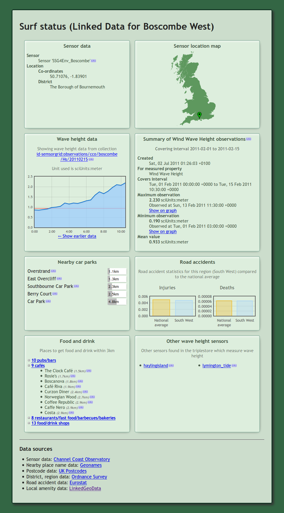

As an example of using the HLAPI this section describes how a "surf status" mashup application was built.
The purpose of this mashup is to take wave height data from the HLAPI for one or more areas, plot this data on a graph and at the same time pick up related information from other sources such as a map showing the location and lists of nearby amenities.
This example uses the PHP scripting language. For Sparql queries and RDF manipulation it uses the Arc2 library and, for ease of coding and readability, Graphite. The Google Chart API is used for charts and the Google Static Maps API and Openlayers for mapping.
Another useful tool is an RDF browser such as the Q&D RDF Browser.
First we load in the Arc2 and Graphite libraries and set up Graphite with a list of namespaces for coding simplicity.
require_once "arc/ARC2.php";
require_once "Graphite.php";
$graph = new Graphite();
$graph->ns("id-semsorgrid", "http://id.semsorgrid.ecs.soton.ac.uk/");
$graph->ns("ssn", "http://purl.oclc.org/NET/ssnx/ssn#");
$graph->ns("DUL", "http://www.loa-cnr.it/ontologies/DUL.owl#");
$graph->ns("time", "http://www.w3.org/2006/time#");
This continues for other useful namespace prefixes. The id-semsorgrid prefix
is added for further code brevity.
One of the observation serializations available from the CCO deployment of the HLAPI is a GeoJSON format. This serialization, which shows the locations of all wave height readings made in a particular time frame, can be rendered by various mapping engines including Openlayers.
The markup to display the map, given the path to an OpenJSON file, is very simple and fully documented by Openlayers.
Depending on how the HLAPI is configured the OpenJSON representation of wave height readings for a particular hour may be at
http://geojson.semsorgrid.ecs.soton.ac.uk/observations/cco/Hs/20110215/00
Given this URL a map such as the following may be generated.
In the case of the CCO deployment, the current day's wave height readings for the Boscombe sensor are identified by
http://id.semsorgrid.ecs.soton.ac.uk/observations/cco/boscombe/Hs/latest
We can direct Graphite to load the resources into a graph -- Graphite and the HLAPI will automatically negotiate a content type which can be used. We're using the namespace we defined above for brevity.
$graph->load("id-semsorgrid:observations/cco/boscombe/Hs/latest");
Graphite allows the graph to be rendered directly as HTML to quickly visualize what is available, the same can be achieved by using a dedicated RDF browser.
echo $graph->dump();
The beginning of the output is something like the following:
id-semsorgrid:observations/cco/boscombe/Hs/20110215
-> rdf:type -> DUL:Collection
-> DUL:hasMember -> id-semsorgrid:observations/cco/boscombe/Hs/20110215#000000,
id-semsorgrid:observations/cco/boscombe/Hs/20110215#003000,
id-semsorgrid:observations/cco/boscombe/Hs/20110215#010000
id-semsorgrid:observations/cco/boscombe/Hs/20110215#000000
-> rdf:type -> ssn:Observation
-> DUL:directlyPrecedes -> id-semsorgrid:observations/cco/boscombe/Hs/20110215#003000
-> DUL:isMemberOf -> id-semsorgrid:observations/cco/Hs/20110215
-> DUL:directlyFollows -> id-semsorgrid:observations/cco/boscombe/Hs/20110214#233000
-> ssn:observedProperty -> http://marinemetadata.org/2005/08/ndbc_waves#Wind_Wave_Height
-> ssn:featureOfInterest -> http://www.eionet.europa.eu/gemet/concept?cp=7495
-> ssn:observedBy -> id-semsorgrid:sensors/cco/boscombe
-> ssn:observationResult -> _:arce2d5b1
-> ssn:observationResultTime -> _arce2d5b3
<- is DUL:hasMember of <- id-semsorgrid:observations/cco/boscombe/Hs/20110215
<- is DUL:directlyFollows of <- id-semsorgrid:observations/cco/boscombe/Hs/20110215#003000
<- is DUL:directlyPrecedes of <- id-semsorgrid:observations/cco/boscombe/Hs/20110214#233000
The bnodes (blank nodes -- non-literal nodes not identified by URIs) are also shown and their IDs can be traced to see which properties are available on each node.
A lot of useful information such as the sensor's coordinates is attached to the
sensor's URI, which is linked from each ssn:Observation node. It's easy to get
the URI, simply by getting ssn:Observation nodes and then collecting the first
found ssn:observedBy property of any of them. It's important to handle the
case where there are not yet any results.
$sensor = $graph->allOfType("ssn:Observation")->get("ssn:observedBy")->distinct()->current();
if ($sensor->isNull())
die("No results yet today");
$sensorURI = $sensor->uri;
To get the sensor's coordinates we ask Graphite to dereference the sensor's URI and load its triples, then traverse the expanded graph to fetch the required values. The traversals here can once again be visualized by first dumping the graph or exploring the graph in any RDF browser.
$graph->load($sensorURI);
$location = $graph->resource($sensorURI)->get("ssn:hasDeployment")->get("ssn:deployedOnPlatform")->get("sw:hasLocation");
$coords = array(
floatVal((string) $location->get("sw:coordinate2")->get("sw:hasNumericValue")),
floatVal((string) $location->get("sw:coordinate1")->get("sw:hasNumericValue")),
);
To collect all wave height observations we query the graph for all nodes of type
ssn:Observation and skip over those whose ssn:observedProperty property is
not that which we are looking for (just in case we have other observation types
in our graph).
Each observation corresponds to a particular time interval so we need to collect
the time (in this example we'll associate the end of the time interval --
time:hasEnd -- with the reading) as well as the wave height observation
itself. The code snippet below also skips any observations whose
ssn:observationResultTime property doesn't point to a node of type
time:Interval, but it would be trivial to also parse nodes of different time
classes.
Finally in this snippet the array of observations is sorted by time.
Again, to see how the traversal is built up it's easiest to inspect the graph visually.
$observations = array();
foreach ($graph->allOfType("ssn:Observation") as $observationNode) {
if ($observationNode->get("ssn:observedProperty") != "http://marinemetadata.org/2005/08/ndbc_waves#Wind_Wave_Height")
continue;
$timeNode = $observationNode->get("ssn:observationResultTime");
if (!$timeNode->isType("time:Interval"))
continue;
$time = strtotime($timeNode->get("time:hasEnd"));
$observations[$time] = floatVal((string) $observationNode->get("ssn:observationResult")->get("ssn:hasValue")->get("ssne:hasQuantityValue"));
}
ksort($observations, SORT_NUMERIC);
The array resulting from the code above can be used to produce a chart of the wave heights. Explaining the snippet below is out of the scope of this document, but it uses the Google Chart API to produce a line graph of wave height against time.
// organize data
$keys = array_keys($observations);
$start = array_shift($keys);
$end = array_pop($keys);
$period = $end - $start;
$datax = $datay = array();
$maxheight = ceil(max($observations) * 10 * 1.2) / 10;
foreach ($observations as $time => $height) {
$datax[] = ($time - $start) * 100 / $period;
$datay[] = $height * 100 / $maxheight;
}
// x axis labels
$axisx = array();
for ($time = $start; $time <= $end; $time += $period / 6)
$axisx[] = date("H:i", $time);
// parameters for Google Chart API
$chartparams = array(
"cht=lxy", //line x-y
"chs=340x200", //size
"chco=0066cc", //data colours
"chm=B,99ccff,0,0,0", //fill under the line
"chd=t:" . implode(",", $datax) . "|" . implode(",", $datay), //data
"chxt=x,y,x", //visible axes
"chxr=0,0,100|1,0," . $maxheight, //x and y axis ranges
"chxl=0:|" . implode("|", $axisx) . "|2:|Time", //custom labels for axes, evenly spread, also axis titles
"chxp=2,50|3,50", //positions of axis titles
"chf=bg,s,ffffff00", //transparent background
);
// output chart
echo '<img src="http://chart.apis.google.com/chart?' . implode("&", $chartparams) . '">';
It's easy to show a map with the sensor's position highlighted, too: the following uses the Google Static Maps API to do this.
echo '<img src="http://maps.google.com/maps/api/staticmap?size=300x200¢er=' . $coords[0] . ',' . $coords[1] . '&zoom=8&maptype=hybrid&sensor=false&markers=' . $coords[0] . ',' . $coords[1] . '">';
We can get the name of a nearby place and the nearest post code from the web services provided by Geonames. Geonames returns XML which is easy to parse with PHP. Again, explaining how the external API call works isn't in the scope of this document.
// get nearby place name
$placenameXML = simplexml_load_file("http://ws.geonames.org/findNearbyPlaceName?lat={$coords[0]}&lng={$coords[1]}");
$placename = array_shift($placenameXML->xpath('/geonames/geoname[1]/name[1]'));
// get nearby postcode
$postcodeXML = simplexml_load_file("http://ws.geonames.org/findNearbyPostalCodes?lat=" . $coords[0] . "&lng=" . $coords[1]);
$postcode = array_shift($postcodeXML->xpath('/geonames/code[1]/postalcode[1]'));
The postcode is used in the surf status mashup to fetch the British region name from Ordnance Survey, which in turn is used to fetch population and traffic accident data from Eurostat.
Data is also collected from Linked Geodata to get the whereabouts of nearby facilities. For instance, to get parking facilities within five kilometres of the sensor, its Sparql endpoint is queried as follows.
$store = ARC2::getRemoteStore(array("remote_store_endpoint" => "http://linkedgeodata.org/sparql/"));
$rows = $store->query("
PREFIX lgdo: <http://linkedgeodata.org/ontology/>
PREFIX geo: <http://www.w3.org/2003/01/geo/wgs84_pos#>
PREFIX rdfs: <http://www.w3.org/2000/01/rdf-schema#>
SELECT * WHERE {
{ ?place a lgdo:Parking . }
UNION { ?place a lgdo:MotorcycleParking . }
UNION { ?place a lgdo:BicycleParking . }
?place
a ?type ;
geo:geometry ?placegeo ;
rdfs:label ?placename .
FILTER(<bif:st_intersects> (?placegeo, <bif:st_point> ($coords[1], $coords[0]), 5)) .
}
", "rows");
The returned results include the coordinates of each parking facility
(placegeo), from which the distance to the sensor can be calculated.
Similar queries can be used to get data on other types of nearby amenities -- the surf status mashup also locates nearby pubs, cafés and shops.
The finished mashup, once styled, looks something like the screenshot shown (with only three readings so far that day).
